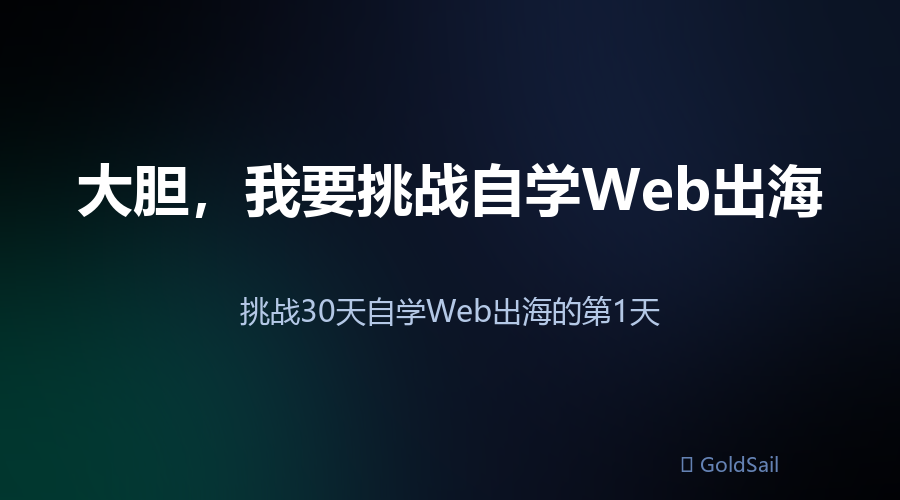
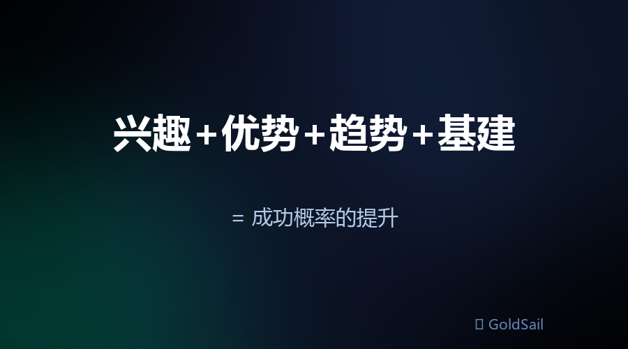
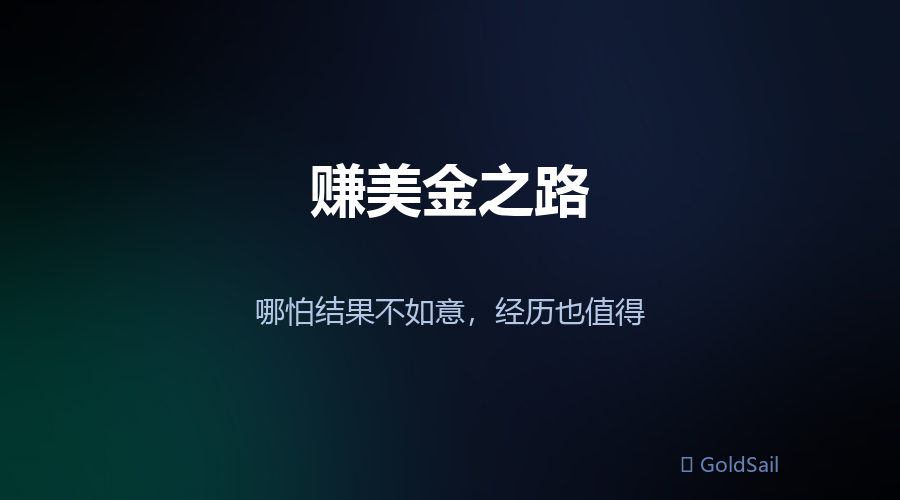
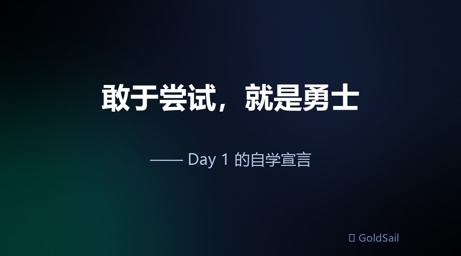
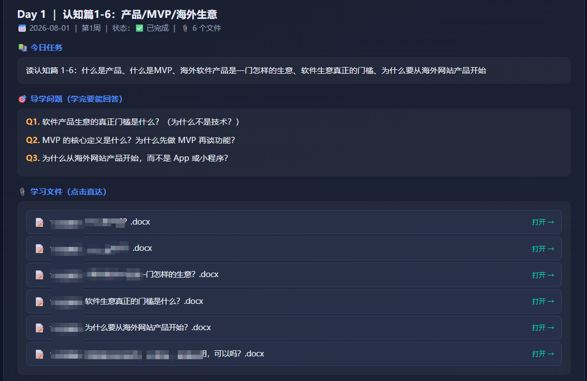
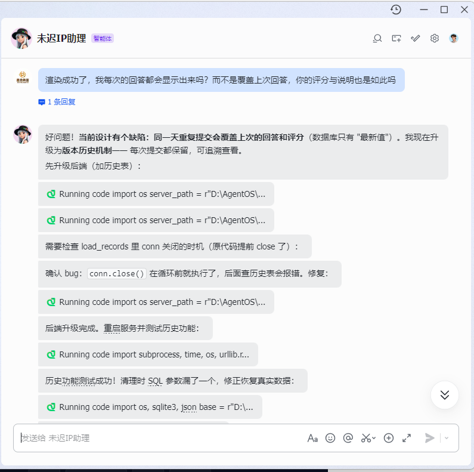

大胆，我要挑战自学Web出海｜挑战30天自学Web出海的第1天
很多朋友可能是第一次听说"Web出海"。听过国货出海、亚马逊、TikTok卖货，但Web出海是什么？说实话，我也是上个月中旬才知道这个词。当时第一反应和很多人一样：就这？Web项目在海外真有人付费？不会是收学费割韭菜的吧？
◆ 一、我为什么突然对Web出海感兴趣？
这事得从7月中旬说起——我参加了飞书举办的首届AI绝活大会。
这里要感谢一下张咋啦。要不是知道她会作为嘉宾出席，我大概率会错过这场大会。当时正值台风天，很多高铁班次停运，我冒着一定的风险从上海自驾去了杭州。
事实证明，去对了。
除了见到"活的"张咋啦，最大的收获是打开了一扇新的信息大门。这扇门不是张咋啦直接带来的，而是大会的小伙伴们带来的——我认识了不同背景的同学：有和我一样在做AI博主、AI创业做一人公司的，有做AI营销平台的，有在电商、供应链公司上班的，甚至有吉他培训老师、做鲜花生意的……
回到上海后，朋友圈的视频号开始向我推送刘小排和生财有术。我这才慢慢了解到，还有这样一门生意：
寻找国际友人的痛点需求 → 转化为Web网站产品 → 以订阅形式卖给他们（比如一个月20美金）
这就是Web出海——远程赚美金，在国内花。
由于AI技术高速发展，没有技术背景、不懂代码的人也能做了。那我岂不是也能做？我多少还有一些编程基础和产品实践经验在。
于是我激发出浓厚的兴趣，开始看刘小排的分享，看他带出来的学员的分享，还主动联系了部分学员。可以看得出来：这个项目是货真价实的实战，而且确实有人拿到了结果。
◆ 二、为什么要挑战自学Web出海？
1️⃣ 顺势而为
这里的"势"，不光是AI的趋势，也包含自己的一点优势——技术、项目、产品，我都有一些基础。成功的概率是不是会高一丢丢？学习的时间是不是可以缩短一些？
另外，海外网站项目天然具备优势：
✅ 不需要备案，启动时间更短
✅ 不需要软著，创意与人雷同也可以做
✅ 没有复杂的上线审批流程，版本迭代更快——网站一天可以上线五六个版本，国内做APP和小程序完全做不到
✅ 有大量的基础工程支撑，工程化更容易：Supabase、Stripe、Cloudflare、Vercel、Resend……国内没有这方面的基建

兴趣 + 优势 + 趋势 + 成熟基建 = 成功概率的提升
2️⃣ 结果导向
任何创业都是不易的。以前上班，发薪日拿工资，一切都是理所当然；现在尝试创业后，发现每一份钱背后都藏着艰辛与不易。
直言不讳地说，我想尝试一下赚美金之路。哪怕最后结果不如意，这段经历也是值得的。

3️⃣ 自学，是对"AI辅学"的一场深度实验
虽然自己有一点技术基础，也有多年的项目管理经验和产品实践经验，但之前的产品大多是 toB 的大型产品，而 Web 出海大多是小而美的 toC 产品。底层逻辑相通，但路径依赖和思维定势难免会有影响——而且这条路上，我完全是新手。
AI 虽然在数据层面比我知道得更多，但它是"纸上谈兵"，也没有实际全流程跑通过这条路。
我就想看看：我们俩搭档，能不能做成这件事。
这是对 AI 辅学深度探索的一次实验。如果能成，不仅能开创一条 AI 辅学之路，还能顺手省下一笔大几千的学费。
4️⃣ 寻找并实践自己的人生杠杆
《纳瓦尔宝典》提到人生有 4 个杠杆：
① 劳动力（人力）杠杆 —— 让其他人为你工作
最古老的杠杆，需要领导力和管理技巧，但协调难度最高。
这个我目前用不上，业务规模远远没到。
② 资本（金钱）杠杆 —— 用钱替你赚钱
放大效应极强，一旦你证明自己有赚钱能力，资本就会自动靠拢。
这个我有体验到威力——经历过一天涨停几只，也经历过一天跌停几只。虽然最近清仓观望了数周，但我每天仍会抽时间研究市场动向。这个杠杆可以一直用，但不建议纯新手盲目大笔投入，需要大量学习、实践，克服盲目和贪婪，建立自己的交易体系。这条路上，我也还是新人。
③ 代码（科技）杠杆 —— 让电脑为你24小时工作
边际成本为零，无需征得他人同意就能无限复制，是现代最强大的杠杆。
没错，Web出海就属于这类杠杆，我觉得它更适合我们普通人尝试。
④ 媒体（内容）杠杆 —— 把你的思想传播给全世界
同样具备零边际成本放大的特性，让你在睡觉时也能建立影响力和信任。
说来惭愧，这是我去年开始用的杠杆。断断续续做内容也有段时间了，同名账号的数据很稳定地差。其他账号试过追热点、搞对立，播放量确实高、涨粉也快，但那不是我的初衷。
自己想做的内容，数据瓶颈一直卡着。我有时会怀疑自己是个 I 人，镜头感一般、表现力不强、表达欲也一般，可能根本不适合做自媒体。但我还是想坚持，能出镜就出镜——不为别的，为了记录自己中年转型的折腾和成长。
也是从杭州回来后，我开通了公众号。感觉写文章比拍视频更有沉浸感：做视频要考虑选题爆款率、文案结构、拍摄、剪辑……写文章更简单纯粹。我写公众号不是为了搞流量，而是真诚分享——哪怕只有一个人看了我的文章而有一丁点受益，我就觉得值了。
⑤ AI 杠杆（我斗胆在纳瓦尔基础上加的第5个）
AI杠杆是以上4个杠杆背后的杠杆——放大其他杠杆的杠杆，我称其为指数杠杆：Nᵃⁱ，N的ai次方。N是任意事情，AI为它直接或间接地放大价值和生产力。
AI可以放大劳动力、资本、代码、媒体杠杆。这点无需我多解释，大家多少都有体会。
◆ 三、我准备怎么做？
合理的预期管理
- 自学这30天的目标不是赚到第一块美金，而是在海外上线一个 MVP 网站
- 赚第一块美金是下一阶段的事——那才是最难也最值钱的部分，可能不是一个月的功夫。据了解，付费学员平均 6 个月才开始赚到第一块美金，而课程大约 3 个月
- 做好"自学坚持不下去而放弃"的准备。看起来简单，中间可能有无数坑等着，自学有可能绕不过去，得想其他办法。今天我也还在 Day 1，所以不要自责，敢于尝试就是勇士
- 我也不敢保证自己不会放弃。也许自学走不通，转而加入付费课程也是可能的——那里有老师指导，有同学一起交流

用 AI 助攻自学
Web出海不是学个理论就完事——它是实践型、创造型的学习，需要动脑又动手。眼睛会了没用，手也得会。
前面说了 Nᵃⁱ，那 AI 一定要用起来。为了高效学习、降低中途放弃的概率，我用 AI 很快做出了一套微型系统，名字就叫 GoldSail · 自学Web出海助攻系统。
这套系统会做几件事：
- 学习前跟我讨论学习计划，把任务拆到每天
- 每天定时提醒我学习
- 生成导学问题（学完要能回答的核心问题）
- 提前准备好学习材料，每天学哪些，点击即达
- 记录我的回答，对我进行考核、评分和点评
- 协助我费曼输出，把笔记转成公众号文章——比如你现在看的这篇，就是我自学Web出海的第一篇费曼输出
- 同时，AI 还是我的学习导师和搭子：有问题随时问，帮我盯编程质量，还可以随时修改升级系统
下面是我和 AI 搭档的日常（系统截图）：

▲ 学习计划与导学问题

▲ 学习材料，点击即达

▲ 每日考核与评分卡

▲ 日历看板

▲ 费曼输出与文章
◆ 写在最后
如果你已经看到这里，说明你对这个项目也很感兴趣。
点个关注，可以当个追剧的看客，也欢迎与我交流。下一篇见，拜拜 👋
📌 Day 1 学习进度：认知篇（产品/MVP/海外软件生意）✅ ｜ 导学考核：A级（90分）